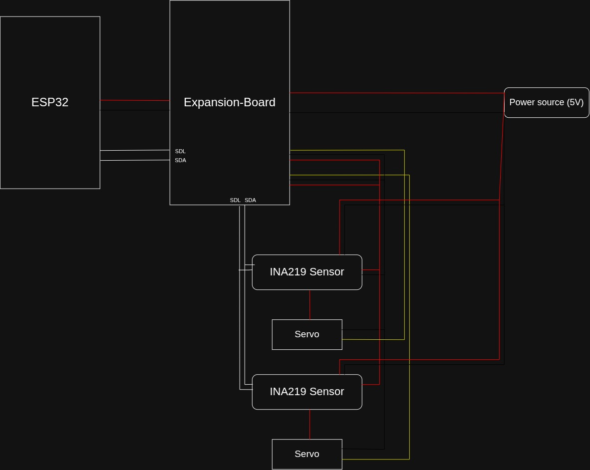

ระบบแจ้งเตือนสถานะ
อุปกรณ์ไฟฟ้า
ตรวจว่าอุปกรณ์ไฟฟ้ากระแสตรงกำลังเปิดหรือปิดอยู่ โดยวัดกระแสด้วยเซนเซอร์ INA219 ส่งผ่าน ESP32 ไปยัง Cloudflare แสดงสถานะบนเว็บ และสรุปการใช้งานประจำวันเข้า LINE เวลา 16:10 น.
ทำไมต้องมีระบบนี้
การลืมปิดอุปกรณ์ไฟฟ้าทำให้สิ้นเปลืองพลังงานและอาจเสี่ยงต่อความปลอดภัย ผู้จัดทำจึงสร้างระบบที่ตรวจสถานะอุปกรณ์จากกระแสไฟฟ้าจริง แล้วแจ้งให้ผู้ใช้ทราบจากที่ไหนก็ได้
ออกแบบและพัฒนาระบบ
ใช้ ESP32 ร่วมกับ INA219 เพื่อตรวจจับสถานะเปิด-ปิดของอุปกรณ์
แจ้งสถานะ
แสดงสถานะบนเว็บไซต์แบบเกือบเรียลไทม์ และสรุปรายวันผ่าน LINE
ทดสอบความแม่นยำ
เทียบผลที่ระบบตรวจจับได้กับสถานะจริงและค่าจากมัลติมิเตอร์
ข้อมูลไหลอย่างไร
ตัดสิน ON/OFF จากกระแส
ใช้เกณฑ์สองขอบ (Hysteresis) กันสถานะกระพริบ ค่าเริ่มต้น: เปิดเมื่อ > 25 mA, ปิดเมื่อ < 15 mA และปรับตามโหลดที่วัดจริง
N/A ไม่ใช่ OFF
ถ้าไม่ได้รับข้อมูลเกิน 30 วินาที เว็บจะแสดง “N/A” (ไม่ทราบสถานะ) เพราะอุปกรณ์อาจหลุดการเชื่อมต่อ ไม่ได้แปลว่าปิด
ปลอดภัยขึ้น
ESP32 ส่งข้อมูลด้วย Bearer token และเซนเซอร์ที่อ่านไม่ได้จะถูกรายงานเป็น FAULT
อุปกรณ์ที่ใช้
ESP32 DevKit
ไมโครคอนโทรลเลอร์หลัก มี Wi-Fi ในตัว
INA219 ×2
วัดแรงดัน กระแส กำลัง ผ่าน I2C ที่อยู่ 0x40 และ 0x41
Expansion Board
บอร์ดที่ออกแบบเอง (KiCad) รองรับไฟเข้า DC Jack / USB Micro-B / USB-C ผ่านไดโอดกันไฟย้อน

ผลการวัดและทดสอบ
| หัวข้อ | วิธีวัด | ผล |
|---|---|---|
| เกณฑ์ ON/OFF | วัดกระแสโหลดจริงช่วงเปิด/ปิด | รอผล |
| ความแม่นยำของ INA219 | เทียบกับมัลติมิเตอร์ | รอผล |
| ความหน่วงจนหน้าเว็บเปลี่ยน | จับเวลาจากวิดีโอ | รอผล |
| เวลาเปลี่ยนเป็น N/A | ถอดไฟ ESP32 แล้วจับเวลา | รอผล |
รายงานและซอร์สโค้ด
📄 เล่มรายงาน IS
รายงานฉบับสมบูรณ์ (PDF) สามารถเปิดดูได้โดยตรงจากกรอบแสดงผลด้านล่าง หรือดาวน์โหลดเก็บไว้
📘 คู่มือและเอกสารเทคนิค
บันทึกการประชุม, การทดลองเบื้องต้น, และเอกสารอ้างอิง
💻 ซอร์สโค้ดทั้งหมด
ซอร์สโค้ด Firmware ESP32, Backend Workers, Frontend, และผังวงจร KiCad
สแกนเพื่อเปิดเว็บไซต์
เพื่อความสะดวกสบายในการเข้าถึง
คณะผู้จัดทำและครูที่ปรึกษา
- นายกฤตภาส ใจใหญ่ · เลขที่ 1 ม.3/1
- นายกิตติศักดิ์ วงษา · เลขที่ 4 ม.3/1
- ด.ช.ปกรณ์เกียรติ แหวนแก้ว · เลขที่ 15 ม.3/1
- ด.ช.วรัญชัย พุทธวงค์ · เลขที่ 19 ม.3/1
- ด.ช.วิชญะ เสาไธสง · เลขที่ 20 ม.3/1
- ด.ช.อชิระ ลิ้มสุวรรณ · เลขที่ 21 ม.3/1
ครูที่ปรึกษา
- ครูศิรประภา ปิ่นเทศ
- ครูสุพรรณี อภิชัยเอนก
- ครูธันยาณัฐ รังสิยานนท์